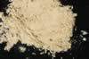

|
|
(For further information on spectroscopy, see:
http://speclab.cr.usgs.gov)
TITLE: Butlerite GDS25 DESCRIPT
DOCUMENTATION_FORMAT: MINERAL
SAMPLE_ID: GDS25
MINERAL_TYPE: Sulfate
MINERAL: Butlerite
FORMULA: Fe+3(SO4)(OH)*2H2O
FORMULA_HTML: Fe+3(SO4)(OH)•2H2O
COLLECTION_LOCALITY: MIT Collection
ORIGINAL_DONOR: Harvard Dana Collection
CURRENT_SAMPLE_LOCATION: USGS Denver Spectroscopy Laboratory
ULTIMATE_SAMPLE_LOCATION: USGS Denver Spectroscopy Laboratory
SAMPLE_DESCRIPTION:
This sample was originally called Fibroferrite (Dave Sherman). Fibroferrite and butlerite have almost the same composition, differing only in the H2O content.
IMAGE_OF_SAMPLE:

END_SAMPLE_DESCRIPTION.
XRD_ANALYSIS:
Pure butlerite.
Konnert, Judith and Marta Flohr, 1992, unpublished data, USGS Reston, VA.
END_XRD_ANALYSIS.
COMPOSITIONAL_ANALYSIS_TYPE: None # XRF, EM(WDS), ICP(Trace), WChem
COMPOSITION_TRACE: None
COMPOSITION_DISCUSSION:
None
END_COMPOSITION_DISCUSSION.
MICROSCOPIC_EXAMINATION:
Avg. gr sz = 10 µm
Very pure sample, all fibrous grains, length fast, nearly straight extinction. Fibrous nature prevents further determination of optical properties. Since I have no optical data on this mineral type to test its identity I cannot be optically sure this is Fibroferrite. G. Swayze.
END_MICROSCOPIC_EXAMINATION.
SPECTROSCOPIC_DISCUSSION:
END_SPECTROSCOPIC_DISCUSSION.
SPECTRAL_PURITY: 1a2a3a4a # 1= 0.2-3, 2= 1.5-6, 3= 6-25, 4= 20-150 microns
| LIB_SPECTRA_HED: | where | Wave Range | Av_Rs_Pwr | Comment |
|---|---|---|---|---|
| LIB_SPECTRA: | splib04a r 765 | 0.2-3.0µm | 200 | g.s.= 10 µm |
| LIB_SPECTRA: | splib05a r 1439 | 0.2-3.0µm | 200 | g.s.= |
| LIB_SPECTRA: | splib06a r 3947 | g.s.= | ||
| LIB_SPECTRA: | splib06a r 3959 | g.s.= |
{kind=link}